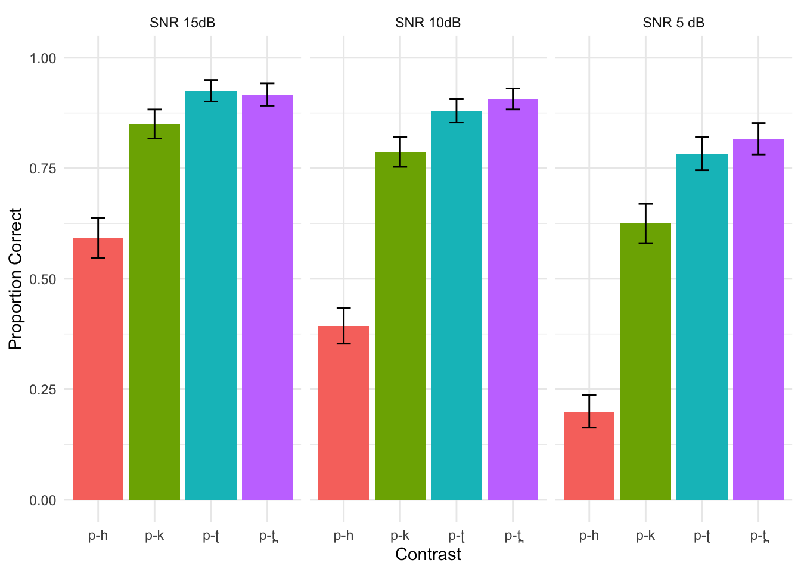

The AX task was conducted in Tamil Nadu via Gorilla. It was a between-subjects design with three groups: Clean, 15dB SNR, and 5dB SNR. We collected data from 64 participants: 20 in Clean, 24 in 15db SNR, and 20 in 5dB SNR. In hindsight we should have done it within-subjects, but I thought the experiment would take too long to complete. There were 120 items that tested discrimination of consonant contrasts in varying vowel environments. For example: ha-ka, ki-ti, pu-thu, etc.
For the purposes of this task however, we’re only interested in the p-C contrasts (this includes C-p as well).
Load the data:
data_15 <- read.csv("Master_15_local.csv", header = TRUE)
data_5 <- read.csv("Master_5_local.csv", header = TRUE)
data_clean <- read.csv("Master_clean_local.csv", header = TRUE)
full_data <- rbind(data_clean,data_15,data_5)Remove all the data except the p-C/C-p trials:
# Full data clean
remove_rows <- function(full_data) {
allowed_values <- c("p-th", "p-t", "p-k", "p-h")
filtered_full_data <- subset(full_data, con %in% allowed_values)
return(filtered_full_data)
}
filtered_full_data <- remove_rows(full_data)
# Make SNR a factor
filtered_full_data$snr <- as.factor(filtered_full_data$snr)## Make a master bar chart of proportion correct w error bars
library(ggplot2)
library(dplyr)
# new names for snr facet labels
snr_names <- list(
"15"="SNR 15dB",
"5"="SNR 5 dB",
"clean"="No added noise")
# use the labeller function in facet
snr_labeller <- function(variable,value){
return(snr_names[value])
}
# Calculate the mean and standard error (SEM) for each group
summary_filtered_full_data <- filtered_full_data %>%
group_by(snr, con) %>%
summarise(mean_corr = mean(corr),
sd_corr = sd(corr),
n = n()) %>%
mutate(se_corr = sd_corr / sqrt(n)) # Calculate Standard Error
# Plot using ggplot2
grey_colors <- c("grey20", "grey40", "grey60", "grey80")
full_plot <- ggplot(summary_filtered_full_data, aes(x = con, y = mean_corr, fill = con)) +
geom_bar(stat = "identity", position = "dodge", show.legend = FALSE) + ylim(0,1)+
geom_errorbar(aes(ymin = mean_corr - se_corr, ymax = mean_corr + se_corr),
position = position_dodge(width = 0.9), width = 0.25) +
facet_wrap(~snr,ncol = 3, labeller = snr_labeller) +
labs(x = "con", y = "Proportion Correct", fill = "Contrast") +
#scale_fill_manual(values = grey_colors) +
theme_minimal()
full_plot
This is a very basic model with accuracy (“corr” in the data frame) as a function of group (“snr”) crossed with contrast (4 levels:p-th, p-t, p-k,p-h). In the model the “clean” group (no added noise) is the reference for snr and “p-h” is the reference for contrast.
library(lme4)
filtered_full_data$snr <- relevel(filtered_full_data$snr, ref = "clean")
model <- glmer(corr ~ snr * con + (1 | part), data = filtered_full_data, family = binomial, control=glmerControl(optimizer="bobyqa",optCtrl=list(maxfun=2e5)))
summary(model)## Generalized linear mixed model fit by maximum likelihood (Laplace
## Approximation) [glmerMod]
## Family: binomial ( logit )
## Formula: corr ~ snr * con + (1 | part)
## Data: filtered_full_data
## Control: glmerControl(optimizer = "bobyqa", optCtrl = list(maxfun = 2e+05))
##
## AIC BIC logLik deviance df.resid
## 1384.8 1454.4 -679.4 1358.8 1547
##
## Scaled residuals:
## Min 1Q Median 3Q Max
## -6.8942 -0.3476 0.2693 0.4654 3.4649
##
## Random effects:
## Groups Name Variance Std.Dev.
## part (Intercept) 1.226 1.107
## Number of obs: 1560, groups: part, 64
##
## Fixed effects:
## Estimate Std. Error z value Pr(>|z|)
## (Intercept) 0.4902 0.3289 1.491 0.1361
## snr15 -0.9622 0.4418 -2.178 0.0294 *
## snr5 -2.1128 0.4814 -4.389 1.14e-05 ***
## conp-k 1.7321 0.3579 4.840 1.30e-06 ***
## conp-t 2.6241 0.4332 6.058 1.38e-09 ***
## conp-th 2.4968 0.4196 5.951 2.67e-09 ***
## snr15:conp-k 0.4012 0.4604 0.871 0.3835
## snr5:conp-k 0.4851 0.4817 1.007 0.3138
## snr15:conp-t 0.2933 0.5447 0.539 0.5902
## snr5:conp-t 0.5034 0.5557 0.906 0.3650
## snr15:conp-th 0.7310 0.5495 1.330 0.1834
## snr5:conp-th 0.8705 0.5524 1.576 0.1151
## ---
## Signif. codes: 0 '***' 0.001 '**' 0.01 '*' 0.05 '.' 0.1 ' ' 1
##
## Correlation of Fixed Effects:
## (Intr) snr15 snr5 conp-k conp-t cnp-th snr15:cnp-k snr5:cnp-k
## snr15 -0.744
## snr5 -0.685 0.510
## conp-k -0.371 0.276 0.249
## conp-t -0.307 0.228 0.204 0.354
## conp-th -0.316 0.235 0.211 0.364 0.319
## snr15:cnp-k 0.294 -0.396 -0.200 -0.767 -0.264 -0.272
## snr5:conp-k 0.279 -0.208 -0.457 -0.736 -0.256 -0.263 0.569
## snr15:conp-t 0.249 -0.336 -0.169 -0.271 -0.784 -0.242 0.374 0.200
## snr5:conp-t 0.243 -0.181 -0.402 -0.268 -0.771 -0.240 0.205 0.441
## snr15:cnp-th 0.247 -0.334 -0.168 -0.266 -0.232 -0.752 0.371 0.198
## snr5:cnp-th 0.244 -0.182 -0.406 -0.267 -0.233 -0.750 0.206 0.443
## snr15:conp-t snr5:conp-t snr15:cnp-th
## snr15
## snr5
## conp-k
## conp-t
## conp-th
## snr15:cnp-k
## snr5:conp-k
## snr15:conp-t
## snr5:conp-t 0.610
## snr15:cnp-th 0.329 0.180
## snr5:cnp-th 0.183 0.402 0.570